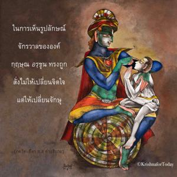

แต่เธอไม่สามารถเห็นข้าด้วยดวงตาปัจจุบันของเธอ ดังนั้นข้าจะให้จักษุทิพย์แก่เธอ จงดูอิทธิฤทธิ์ความมั่งคั่งของข้า

สาวกผู้บริสุทธิ์ไม่ชอบที่จะเห็นองค์กฺฤษฺณในรูปลักษณ์อื่นใดนอกจากรูปลักษณ์สองกรของพระองค์ สาวกจะเห็นรูปลักษณ์จักรวาลขององค์ภควานฺด้วยพระกรุณาธิคุณของพระองค์ไม่ใช่ด้วยจิตใจแต่ด้วยจักษุทิพย์ ในการเห็นรูปลักษณ์จักรวาลขององค์กฺฤษฺณ อรฺชุน ทรงถูกสั่งไม่ให้เปลี่ยนจิตใจแต่ให้เปลี่ยนจักษุ รูปลักษณ์จักรวาลขององค์กฺฤษฺณไม่สำคัญเท่าใดนัก ประเด็นนี้จะทำให้กระจ่างขึ้นในโศลกต่อๆไป แต่เนื่องจาก อรฺชุน ทรงปรารถนาที่จะเห็นองค์กฺฤษฺณจึงทรงให้จักษุแก่ อรฺชุน โดยเฉพาะเท่าที่จำเป็นเพื่อที่จะได้เห็นรูปลักษณ์จักรวาล
เหล่าสาวกผู้สถิตอย่างถูกต้องในความสัมพันธ์ทิพย์กับองค์กฺฤษฺณทำการยึดมั่นอยู่กับรูปลักษณ์อันน่ารักของพระองค์ ไม่ใช่ไปยึดติดอยู่กับการแสดงความมั่งคั่งโดยปราศจากองค์ภควานฺ เพื่อนๆและผู้ปกครองขององค์กฺฤษฺณไม่เคยปรารถนาที่จะให้องค์กฺฤษฺณแสดงความมั่งคั่งแต่หมกมุ่นอยู่ในความรักอันบริสุทธิ์จนกระทั่งไม่รู้ว่าองค์กฺฤษฺณคือบุคลิกภาพสูงสุดแห่งพระเจ้า ในการแลกเปลี่ยนความรักนั้นพวกเขาลืมไปว่าองค์กฺฤษฺณเป็นองค์ภควานฺ ใน ศฺรีมทฺ-ภาควตมฺ ได้กล่าวไว้ว่าเด็กๆทั้งหมดที่เล่นกับองค์กฺฤษฺณเป็นดวงวิญญาณที่มีบุญบารมีสูงส่งมาก หลังจากหลายต่อหลายชาติจึงจะมีโอกาศมาเล่นกับองค์กฺฤษฺณได้ เด็กๆเหล่านี้ไม่รู้ว่าองค์กฺฤษฺณคือบุคลิกภาพสูงสุดแห่งพระเจ้าจึงได้แต่ปฏิบัติต่อองค์กฺฤษฺณเสมือนเป็นเพื่อนสนิท ศุกเทว โคสฺวามี กล่าวโศลกต่อไปนี้
อิตฺถํ สตำ พฺรหฺม-สุขานุภูตฺยา
ทาสฺยํ คตานำ ปร-ไทวเตน
มายาศฺริตานำ นร-ทารเกณ
สากํ วิชหฺรุห์ กฺฤต-ปุณฺย-ปุญฺชาห์
“นี่คือบุคคลสูงสุดที่นักปราชญ์ผู้ยิ่งใหญ่พิจารณาว่าเป็น พฺรหฺมนฺ อันไร้รูปลักษณ์สาวกพิจารณาว่าเป็นบุคลิกภาพสูงสุดแห่งพระเจ้า และมนุษย์ปุถุชนธรรมดาพิจารณาว่าเป็นผลผลิตของธรรมชาติวัตถุ บัดนี้เด็กๆผู้ทำบุญมาหลายต่อหลายชาติเหล่านี้ได้มาเล่นอยู่กับองค์ภควานฺ” ( ศฺรีมทฺ-ภาควตมฺ 10.12.11)
ความจริงก็คือสาวกจะไม่สนใจกับการเห็น วิศฺว-รูป หรือรูปลักษณ์จักรวาลแต่ อรฺชุน ทรงปรารถนาจะเห็นเพื่อยืนยันคำดำรัสขององค์กฺฤษฺณ เพื่อในอนาคตผู้คนสามารถเข้าใจว่าองค์กฺฤษฺณทรงไม่ใช่แสดงตนเองว่าเป็นองค์ภควานฺในทางทฤษฎีหรือทางปรัชญาเท่านั้น แต่พระองค์ทรงแสดงให้ อรฺชุน เห็นจริง อรฺชุน ทรงต้องยืนยันเช่นนี้เพราะเป็นผู้เริ่มต้นระบบ ปรมฺปรา พวกที่สนใจจะเข้าใจองค์ภควานฺ กฺฤษฺณโดยแท้จริง และผู้ที่ปฏิบัติตามรอยพระบาทของ อรฺชุน ควรเข้าใจว่าองค์กฺฤษฺณทรงไม่ได้เป็นองค์ภควานฺในทางทฤษฏีเท่านั้น แต่ทรงเปิดเผยรูปลักษณ์ในฐานะที่เป็นองค์ภควานฺโดยแท้จริง
พระองค์ทรงให้พลังอำนาจที่จำเป็นแด่ อรฺชุน ในการเห็นรูปลักษณ์จักรวาล เพราะทราบดีว่า อรฺชุน ทรงมิได้ปรารถนาเจาะจงที่จะเห็นดังที่ได้อธิบายไว้แล้ว